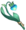

Atualmente atua como investigadora na Guilda de Aventureiros. Por meio de suas habilidades únicas, caráter excêntrico e (embora ela mesma nunca admitisse) trabalho árduo, Fischl se tornou uma estrela em ascensão entre os investigadores do Adventurers 'Guild, ganhando o reconhecimento de todos.
Fischl, Prinzessin der Verurteilung do reino exterior Immernachtreich, e seus parentes, o corvo noturno. Atendendo ao chamado do destino, descemos sobre Teyvat. Fischl se apresenta a todos os membros da Guilda dos Aventureiros dessa maneira. Devido a sua visão compartilhada com o corvo Oz, Fischl foi capaz de se juntar ao Adventurers 'Guild e se tornar um investigador com facilidade. Inicialmente, isso deu aos membros da Guilda grande dificuldade em compreender o que Fischl estava dizendo. Mas, graças ao seu trabalho incansável e à interpretação diligente de Oz, todos foram finalmente capazes de entendê-la. Embora excêntrico em palavras e ações, o reconhecimento deste investigador é rápido e sua inteligência precisa, características que lhe permitiram ganhar gradualmente a confiança de todos. Ajuda o fato de Fischl também ser uma pessoa muito gentil. "Oz, meu familiar ... abra suas asas que eclipsam o sol, e vigie aquele a quem o mal destino se apega como uma mortalha." "Sim, mein Fräulein." Hoje, Fischl também deve mostrar preocupação com as massas da Guilda dos Aventureiros à sua própria maneira.
Fischl tem cabelos loiros, olhos verdes e um corpo pequeno com pele clara. Duas partes de seu cabelo estão presas em fios de cabelo com uma fita preta. Ela usa um vestido de renda preta com cruzes costuradas, sobretudos violeta, luvas e tapa-olho preto.
Como investigador do Adventurers 'Guild, a maior vantagem de Fischl sobre seus colegas é Oz. "Milady, por favor, pare de me mandar para espionar Stormterror. Esse cara poderia me comer no café da manhã! Bem, eu sou tão franzino que provavelmente nem seria preso entre os dentes, mas ... De qualquer forma, eu não querer morrer!" "Hmph! Você deveria ser meu familiar. Nem todo mundo chega a ser o familiar da Prinzessin der Verurteilung, você entende? Considere uma honra dedicar sua vida para me servir!" Fischl é capaz de ver através dos olhos de Oz. Sempre que ela quer, ela possui Oz e olha para a terra do céu. Quer ela queira inspecionar a flora nas Montanhas Stormbearer ou observar uma perturbação em Wolvendom, através de Oz ela pode ver tudo e qualquer coisa. Graças em grande parte à sua habilidade única - e, em menor medida, ao seu próprio esforço e personalidade peculiar - Fischl rapidamente passou de investigador novato da Guilda dos Aventureiros a uma respeitada estrela em ascensão da organização. Ela certamente se deu bem. Ela só conseguiu a cobiçada posição de Investigadora aos quatorze anos, em primeiro lugar, porque seus pais conseguiram persuadir o mestre da guilda. Então, novamente, eles realmente teriam que persuadir muito? Se ela é a Prinzessin der Verurteilung ... só podemos supor que isso os tornaria o Kaiser e Kaiserin der Verurteilung.
Diz-se que atualmente existe um "Dicionário Fischl" em circulação entre os aventureiros. Ou seja, um livro que visa traduzir a maneira peculiar de falar de Fischl em algo mais compreensível. Por exemplo: "Eu ouço ... ecoando no abismo do tempo, os ventos ardentes do antigo, todos os quais moldam a torre esquecida nas torrentes de carma" se traduziria em "Stormterror's Lair"; "Servos do nome Verurteilung! Como você solicitou, prepare-se para receber a grande sabedoria do prinzessin" seria "Vou dar uma olhada nisso e informá-lo o mais rápido possível"; "Alegrem-se! Ó, servos que anseiam pela bênção do prinzessin; aventurar-se agora profundamente no campo de batalha com o coração do tigre" significa que o trabalho investigativo inicial foi concluído; "Tudo foi escrito neste tomo de profecias sombrias" significa simplesmente que seu diário foi atualizado com os relatórios mais recentes. No entanto, o "Dicionário Fischl" é na verdade apenas uma piada interna, não um livro real. Aqueles que estão familiarizados com Fischl se concentram no que ela quer dizer, não na maneira como o diz; ela percebe isso e considera isso um sinal de verdadeiro respeito. "Aha! Então você entende. Então o destino realmente une almas gêmeas." Aqueles que conseguem adotar seus maneirismos de fala quando respondem a ela vão descobrir que ela está encantada e tímida, e elogia sua habilidade de aprendizagem de línguas. "Um prinzessin deve sempre elogiar onde o elogio é devido ... Agora, conversemos um pouco mais. Não se engane; esses são os alicerces do novo mundo ..."
Ataque Normal:
Executa até 5 tiros consecutivos com um arco.
Ataque Carregado:
Realiza um Disparo com Mira com Dano aumentado. DUrante a mira, espiritos sombrios dos relâmpagos da escuridão atenderão o chamado de sua Princesa e residirão na ponta encantada de sua flecha. Quando estiver completamente incorporada, o relâmpago vingativo irá infligir um imenso Dano Electro.
Ataque Imersivo:
Dispara uma chuva de flechas no ar antes de cair e atingir o solo, distribuindo Dano de AdE(Área de efeito) no impacto.
| Dano de 1º Golpe | 44.1% |
|---|---|
| Dano de 2º Golpe | 46.8% |
| Dano de 3º Golpe | 58.1% |
| Dano de 4º Golpe | 57.7% |
| Dano de 5º Golpe | 72.1% |
| Disparo com Mira | 43.9% |
| Disparo com Mira com Energização Completa | 124% |
| Dano Durante a Queda | 56.8% |
| Dano de Queda de Alta/Baixa Altitude |
114% / 142% |

Evoca o Oz. O corvo da noite moldado pela escuridão e relâmpagos desce à terra, infligindo Dano Electro em uma pequena AdE. Durante a duração da habilidade, Oz irá continuamente atacar inimigos próximos com Bolas Eletrificantes.
Mantenha pressionado para ajustar a localização de onde o Oz será evocado. Pressione a qualquer momento durante a duração da habilidade para chamá-lo novamente para o lado de Fischl.
| Dano de ATQ de Oz | 88.8% |
|---|---|
| Dano de Invocação | 115% |
| Duração de Oz | 10s |
| Tempo de Recarga | 25s |

Evoca Oz para estender suas asas gêmeas do crepúsculo e defender Fischl. Tem as seguintes propriedades durante a duração da habilidade:
Fischl se trasnforma na forma de Oz, aumentando incrivelmente sua Velocidade de Movimento. Ataca inimigos próximos com relâmpago, infligindo Dano Electro em inimigos que ela entra em contato. Cada inimigo pode apenas ser atingido uma única vez. Quando o efeito desta habilidade acaba, Oz continuará em campo, então reiniciará a duração de sua presença
| Dano de Eletrocutamento | 208% | Tempo de Recarga | 15s |
|---|---|
| Energia Elemental | 60 |

Quando Fischl atinge Oz com um Disparo com Mira totalmente carregado, Oz traz a Retribuição Trovejante, causando Dano Electro AdE igual a 152.7% do Dano da flecha.

Se um personagem disparar uma Reação Elemental Electro-relacionada quando Oz está no campo, o inimigo será atingido com Thundering Retribution, causando Dano Electro igual a 80% do ATQ de Fischl.

Quando despachado em uma expedição en Mondstadt, o tempo consumido é reduzido em 25%.

Mesmo que Oz não esteja presente no combate, ele ainda pode protejer Fischl através dos seus Olhos de Corvo. Quando Fischl ataca um inimigo, Oz atacará simultaneamente, causando 22% de Dano de ATQ.
Quando as Asas da Vigilâcia Noturna são usadas, causa um adicional de 200% de ATQ como Dano e a sua AdE é aumentada em 50%.
Aumenta o nível de Asas da Vigilâcia Noturna em 3. O nível máximo de atualização é 15.

Quando a Ilusão Noturna é usado, ele distribui 222% do ATQ como Dano Electro para os inimigos ao redor. Quando a duração da habilidade termina, Fischl regenera 20% de seus Pontos de Vida.
Aumenta o nível da Ilusão Noturna em 3. O nível máximo de atualização é 15.
Aumenta a duração da invocação de Oz em 2s. Além disso, Oz ataca com o personagem atual quando presente, tratando 30% do ATQ de Fischl como Dano Electro.

Esta construção capacita o Dano Electro de Fischl em suas habilidades. Você também pode usar um conjunto Noblesse Oblige completo se estiver usando o Explosão Elemental dela com frequência.

Aumenta a habilidade elemental e o Dano de explosão elemental em 24/30/36/42/48%.

(2) Dano de habilidade elementar aumentada em 20%
(2) Bonús de Dano Electro +15%
| Ascensão | Max Lv. |  |
Material Elemental 1 | Material Elemental 2 | Especialidade Local | Material Comum |
|---|---|---|---|---|---|---|
| 1st | 20 | 20,000 | Prata de Ametista Vajrada x1 |
Nenhum |  Lâmpada de Grama x3 |
 Flechas Robustas x3 |
| 2nd | 40 | 40,000 | Fragmento de Ametista Vajrada x3 |
Prisma Relâmpago x2 |
Lâmpada de Grama x10 |
Flechas Robustas x15 |
| 3rd | 50 | 60,000 | Fragmento de Ametista Vajrada x6 |
Prisma Relâmpago x4 |
Lâmpada de Grama x20 |
 Flechas Afiadas x12 |
| 4th | 60 | 80,000 | Pedaço de Ametista Vajrada x3 |
Prisma Relâmpago x8 |
Lâmpada de Grama x30 |
Flechas Afiadas x18 |
| 5th | 70 | 240,000 | Pedaço de Ametista Vajrada x6 |
Prisma Relâmpago x12 |
Lâmpada de Grama x45 |
 Flechas Usadas x16 |
| 6th | 80 | ? | Gema de de Ametista Vajrada x6 |
Prisma Relâmpago x20 |
Lâmpada de Grama x60 |
Flechas Usadas x24 |
| Máximo | 90 | Max | Max | Max | Max | Max |